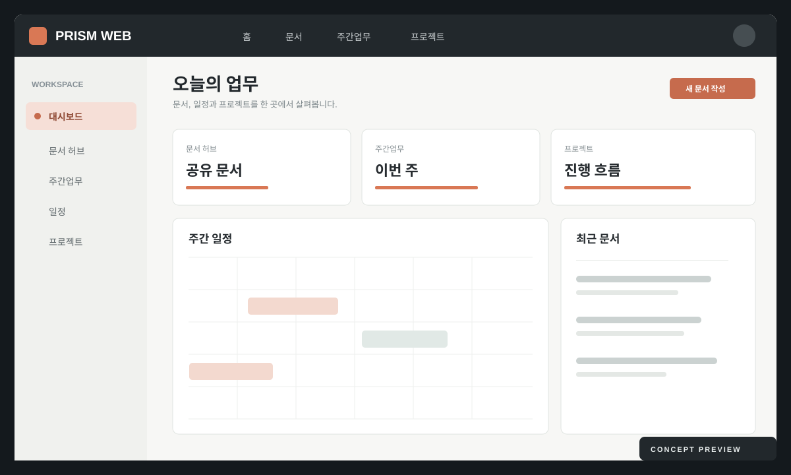
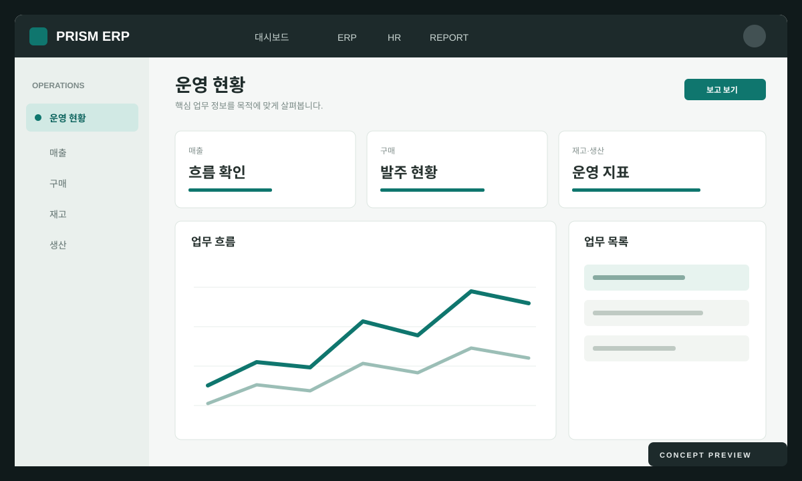

01 / WORKSPACE
Workspace
문서, 주간보고, 프로젝트, 팀 일정을 한곳에서 보고 함께 움직입니다.
Workspace 자세히 보기PRISM / WORKSPACE + ERP
흩어진 일은 모으고, 중요한 흐름은 이어줍니다. PRISM은 협업을 위한 Workspace와 운영을 위한 ERP를 하나의 맥락으로 연결합니다.

01 / INTRODUCTION FILM
프리즘 가이드와 김 대리의 하루를 따라 Workspace와 ERP가 하나로 이어지는 모습을 살펴보세요. 실제 화면과 한국어 내레이션, 자막이 들어 있어요. 챕터를 눌러 원하는 장면으로 바로 이동할 수 있습니다.
02 / PLATFORM
Workspace는 사람과 일이 만나는 공간이고, ERP는 운영의 흐름을 기록합니다. 필요한 정보가 다음 업무로 이어지도록 연결합니다.
문서, 주간보고, 프로젝트, 팀 일정을 한곳에서 보고 함께 움직입니다.
Workspace 자세히 보기매출부터 인사와 리포트까지, 운영 데이터를 업무 흐름에 맞게 정리합니다.
ERP 자세히 보기03 / WORKSPACE
찾기 쉬운 문서, 공유되는 주간보고, 보이는 프로젝트와 일정. 팀이 같은 맥락에서 일하도록 돕습니다.
기준 문서와 자료를 한곳에서 찾습니다.
이번 주의 진행 상황과 다음 단계를 공유합니다.
담당자와 할 일을 흐름에 따라 봅니다.
일정과 협업 시간을 함께 맞춥니다.
04 / ERP
매출·구매·재고·생산·인사·보고를 분리된 표 대신 이어지는 운영 흐름으로 봅니다.
거래 흐름을 한눈에 파악합니다.
재고와 생산 상태를 함께 봅니다.
사람과 운영 지표를 판단에 연결합니다.

05 / CONNECTED FLOW
사람이 일을 만들고, 업무가 데이터를 남기고, 데이터가 더 나은 판단을 돕습니다. PRISM은 그 사이의 맥락을 끊지 않습니다.
06 / VISIBILITY
주간 현황과 프로젝트 진행, 운영 지표가 같은 화면에 모이면 회의는 짧아지고 다음 행동은 선명해집니다.
화면 구성 예시 · 실데이터 없음
07 / DIRECTION
PRISM은 현재 개발 중인 프로젝트입니다. Workspace와 ERP를 실제 업무 흐름에 맞춰 단계적으로 완성합니다.